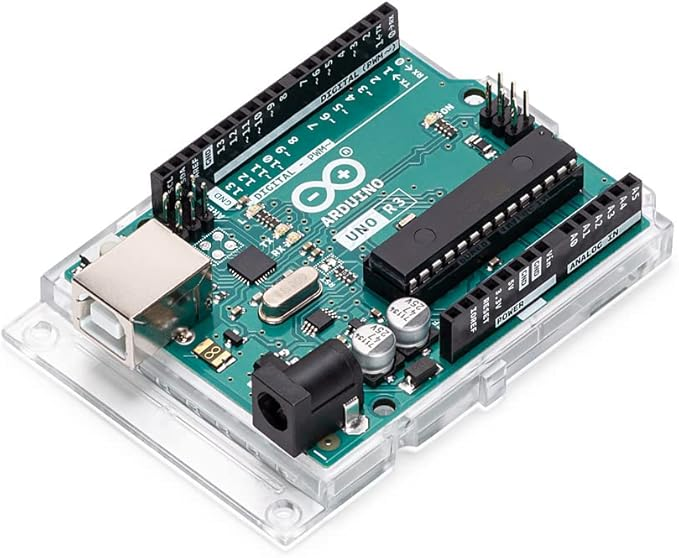

Esla diferents microcontroladors tenen en commú els següents aspectes:
PWM significa modulació de l'ample de banda, en anglès Pulse Width Modulation i és una forma d'aconseguir una sorida analògica a partir de diverses sorides digitals, molt ràpides.
PWM es representa amb el símbol "~" tal com podem verure en la imatge següent d'un Arduino Uno
Més amunt podem veure que els pins números 3, 5, 6, 9, 10 i 11.
Aquests PWM són sortides analògiques de 8 bits, en el cas de Arduino Uno Rev3 d'acord amb el fabricant, mentres que en el cas d'arduino Uno Rev4 és de 12 bits segons el fabricant